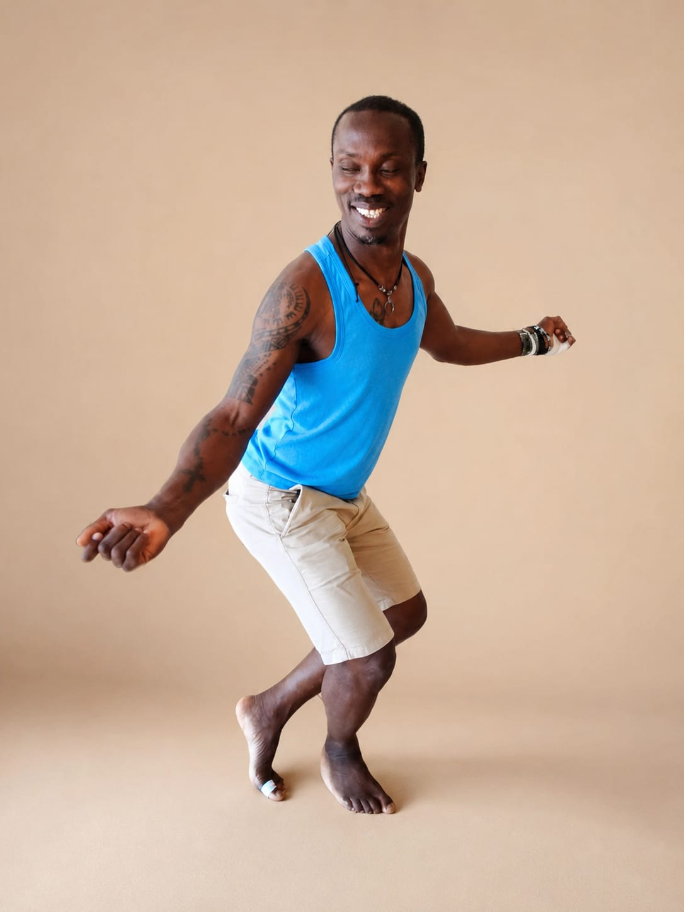

2007
La naissance de FACIG Awâllé
L'association F.A.C.I.G. Awâllé a été fondée en 2007 par Achil Gadié Djegna, originaire de Guéménédou, dans la province de Gagnoa en Côte d'Ivoire, afin de venir en aide aux habitants du village.
À but non lucratif, elle est animée par une équipe de bénévoles et s'appuie sur un réseau solidaire.